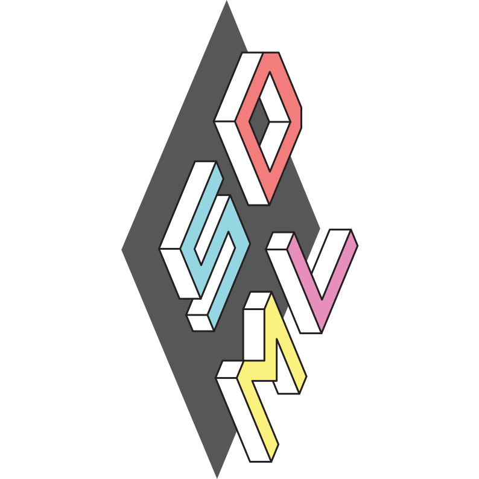

Simple Domain Modeling Language
Language Reference
Table of Contents

1. Appendix: Unicode Usage
The grammar for SDML uses a number of Unicode alternative characters for operators, relations, and keywords. Table
1 lists these with their ASCII equivalents. In the case of the type-of relation there are two
Unicode choices where the character → is usually used for expressing the type of members and function parameters and the
character ↦ is usually reserved for mapping types and mapping values.
| Operator, Relation, or Keyword | ASCII | Unicode | Unicode Codepoint | Unicode Name |
|---|---|---|---|---|
| Domain of discource. | 𝔻 | U+1D53B |
Mathematical double-struck capital D | |
| Type-of (1) | -> |
→ |
U+2192 |
Rightwards arrow |
| Type restriction (1) | <- |
← |
U+2190 |
Leftwards arrow |
| Equal by Definition (1) | := |
≔ |
U+2254 |
Colon equals |
| Inequation | /= |
≠ |
U+2260 |
Not equal to |
| Greater-than or equal | >= |
≥ |
U+2265 |
Greater-than or equal to |
| Less-than or equal | <= |
≤ |
U+2264 |
Less-than or equal to |
| Implication | implies or ==> |
⇒ |
U+21D2 |
Rightwards double arrow |
| Biconditional | iff or <==> |
⇔ |
U+21D4 |
Left right double arrow |
| Universal quantifier | forall |
∀ |
U+2200 |
For all |
| Existential quantifier | exists |
∃ |
U+2203 |
There exists |
| Negative existential quantifier | not exists |
∄ |
U+2203 |
There does not exists |
| Sequence membership | in |
∈ |
U+2208 |
Element of |
| Sequence non-membership | not in |
∉ |
U+2208 |
Not an element of |
| Negation | not |
¬ |
U+00A5 |
Not sign |
| Conjunction | and |
∧ |
U+2227 |
Logical and |
| Disjunction | or |
∨ |
U+2228 |
Logical or |
| Exclusive disjunction (1) | xor |
⊻ |
U+22BB |
Xor |
| Set complement | complement |
∖ |
U+2216 |
Set minus |
| Set intersection | intersects |
∩ |
U+2229 |
Intersection |
| Set product (1) | product |
∏ |
U+220F |
N-ary product |
| Set union | union |
∪ |
U+222A |
Union |
| Subset | subset |
⊂ |
U+2282 |
Subset of |
| Subset or equal | subseteq |
⊆ |
U+2286 |
Subset of or equal to |
| Superset | supset |
⊃ |
U+2283 |
Superset of |
| Superset or equal | supseteq |
⊇ |
U+2287 |
Superset of or equal to |
| Division | / |
÷ |
U+00F7 |
Solidus |
| Multiplication (1) | * |
× |
U+00D7 |
Multiplication sign |
| Function composition | . |
∘ |
U+2218 |
Ring operator |
| Empty sequence | [] |
∅ |
U+2205 |
Empty set |
| Truth value | true |
⊤ |
U+22A4 |
Down tack |
| False value | false |
⊥ |
U+22A5 |
Up tack |
Notes
In describing the type system for SDML the characters ⊤ and ⊥ are also used to describe the type of all things and the
type of no things respectively. The grammar does not use these distinctions and the values are only used for boolean
values.
For some entries in the table above there are notation options not supported by SDML. In the following discussion the value \(v\) represents some valid member of the type \(T\).
- The type-of relation uses the rightward arrow \(v \rightarrow T\), common in programming languages and type theory. SDML chose not
to use the colon \(v : T\) character which is heavily used in programming.
- Product types \(T {\,\mathrel{\mathop:}=\,} T_1 \times T_2 \cdots \times T_n\).
- Sum types \(T {\,\mathrel{\mathop:}=\,} T_1 + T_2 \cdots + T_n\).
- Functions \((T_1 \times T_2 \cdots \times T_n) → T\)
- The type-restriction relation uses the leftward arrow \(T_2 ← T_1\) to denote that a type is a sub-type of another by
restriction.
- In languages that support sub-type polymorphism the expression is commonly \(T_2 \sqsubseteq T_1\) or \(T_2 \leq: T_1\).
- The inequation operator uses the slashed equation symbol \(v_1 \neq v_2\), or it’s ASCII equivalent
/=, while some programming languages use!=,~=, or<>. - The unary logical connective negation does not introduce an ASCII symbol such as
!or~as in some programming languages, only the logic symbol \(\neg v\). - Similarly, the binary logical connectives \(\{\land,\lor,\veebar,\implies,\iff\}\) do not introduce ASCII symbols from programming languages.
1.1. Additional Unicode Characters
The following characters are used in this documentation as examples or alternatives to those in table 1.
| Operator, Relation, or Keyword | ASCII | Unicode | Unicode Codepoint | Unicode Name |
|---|---|---|---|---|
| Type-of (2) | -> |
↦ |
U+21A6 |
Rightwards arrow from bar |
| Type restriction (2) | <- |
⊑ |
U+2291 |
Square image of or equal to |
| Equal by definition (2) | := |
≝ |
U+225D |
Equal to by definition |
| Equal by definition (3) | := |
≜ |
U+225C |
Delta equal to |
| Parent | ^ |
↑ |
U+2191 |
Upwards arrow |
| Logical nand | nand |
⊼ |
U+22BC |
Nand |
| Logical nor | nor |
⊽ |
U+22BD |
Nor |
| Multiplication (2) | * |
⋅ |
U+22C5 |
Dot operator |
| Multiplication (3) | * |
✕ |
U+22C5 |
Multiplication X |
| Multiplication (4) | * |
|
U+2062 |
Invisible times |
| Set disjoint union | disunion |
⊔ |
U+2294 |
Square cup |
| Set product (2) | product |
⨉ |
U+2A09 |
N-ary times operator |
| Set symmetric difference (1) | difference |
△ |
U+25B3 |
White up-pointing triangle |
| Set symmetric difference (2) | difference |
⊖ |
U+2296 |
Circled minus |
| Exclusive disjunction (2) | xor |
⊕ |
U+2295 |
Circled plus |
| Cardinality range | Display only | ⋯ |
U+22EF |
Midline horizontal ellipsis |
| Unbounded cardinality (1..∞) | Display only | ∞ |
U+221E |
Infinity |
| End of formal constraint | Display only | □ |
U+25A1 |
White square |
| Equivalent | Documentation only | ≡ |
U+2261 |
Identical to |
| Not Equivalent | Documentation only | ≢ |
U+2262 |
Not identical to |
| Strictly Equivalent | Documentation only | ≣ |
U+2263 |
Strictly equivalent to |
1.2. Equivalent LaTeX Math
| Operator, Relation, or Keyword | ASCII | LaTeX | LaTeX Code |
|---|---|---|---|
| Domain of discource. | \(\mathbb{D}\) | mathbb{D} in amsfonts or amssymb |
|
| Type-of (1) | -> |
\(\rightarrow\) | rightarrow |
| Type restriction (1) | <- |
\(\leftarrow\) | leftarrow |
| Equal by Definition (1) | := |
\(\coloneqq\) | coloneqq in mathtools |
| Inequation | /= |
\(\neq\) | neq |
| Greater-than or equal | >= |
\(\geq\) | geq |
| Less-than or equal | <= |
\(\leq\) | leq |
| Implication | implies or ==> |
\(\implies\) | implies |
| Biconditional | iff or <==> |
\(\iff\) | iff |
| Universal quantifier | forall |
\(\forall\) | forall |
| Existential quantifier | exists |
\(\exists\) | exists |
| Negative existential quantifier | not exists |
\(\nexists\) | nexists |
| Singular Existential quantifier | exists! |
\(\exist!\) | exists! |
| Sequence membership | in |
\(\in\) | in |
| Sequence non-membership | not in |
\(\notin\) | notin |
| Negation | not |
\(\not\) | lnot |
| Conjunction | and |
\(\land\) | land |
| Disjunction | or |
\(\lor\) | lor |
| Exclusive disjunction (1) | xor |
\(\veebar\) | veebar |
| Set complement | complement |
\(\setminus\) | setminus |
| Set intersection | intersects |
\(\cap\) | cap |
| Set product (1) | product |
\(\prod\) | prod |
| Set union | union |
\(\cup\) | cup |
| Subset | subset |
\(\subset\) | subset |
| Subset or equal | subseteq |
\(\subseteq\) | subseteq |
| Superset | supset |
\(\supset\) | supset |
| Superset or equal | supseteq |
\(\supseteq\) | supseteq |
| Division | / |
\(\div\) | div |
| Multiplication (1) | * |
\(\times\) | times |
| Modulo Division | mod or % |
\(\bmod\) | bmod |
| Function composition | . |
\(\circ\) | circ |
| Empty sequence | [] |
\(\emptyset\) | emptyset |
| Truth value | true |
\(\top\) | top |
| False value | false |
\(\bot\) | bot |
| Operator, Relation, or Keyword | ASCII | LaTeX | LaTeX Code |
|---|---|---|---|
| Type-of (2) | -> |
\(\mapsto\) | mapsto |
| Type restriction (2) | <- |
\(\sqsubseteq\) | sqsubseteq |
| Equal by definition (2) | := |
\(\stackrel{\scriptscriptstyle\mathrm{def}}{=}\) | stackrel {\scriptscriptstyle\mathrm{def}} {=} |
| Equal by definition (3) | := |
\(\triangleq\) | triangleq |
| Parent | ^ |
\(\uparrow\) | uparrow |
| Logical nand | nand |
\(\barwedge\) | barwedge |
| Logical nor | nor |
\(\char"22BD\) | barvee in unicode-math |
| Multiplication (2) | * |
\(\cdot\) | cdot |
| Multiplication (3) | * |
\(\times\) | times |
| Set disjoint union | disunion |
\(\sqcup\) | sqcup |
| Set symmetric difference (1) | difference |
\(\triangle\) | triangle |
| Set symmetric difference (2) | difference |
\(\ominus\) | ominus |
| Exclusive disjunction (2) | xor |
\(\oplus\) | oplus |
| Cardinality range | Display only | \(\cdots\) | cdots |
| Unbounded cardinality (1..∞) | Display only | \(\infty\) | infty |
| End of formal constraint | Display only | \(\Box\) | Box in latexsym |
| (Meta) Equivalent | Documentation only | \(\stackrel{\scriptscriptstyle\mathrm{ref}}{=}\) | stackrel {\scriptscriptstyle\mathrm{ref}} {=} |
| Equivalent | Documentation only | \(\equiv\) | equiv |
| Not Equivalent | Documentation only | \(\not\equiv\) | not equiv |
| Strictly Equivalent | Documentation only | \(\char"2263\) | Equiv in unicode-math |
2. License
Copyright 2023 Simon Johnston <johnstonskj@gmail.com>
Licensed under the Apache License, Version 2.0 (the "License");
you may not use this file except in compliance with the License.
You may obtain a copy of the License at
http://www.apache.org/licenses/LICENSE-2.0
Unless required by applicable law or agreed to in writing, software
distributed under the License is distributed on an "AS IS" BASIS,
WITHOUT WARRANTIES OR CONDITIONS OF ANY KIND, either express or implied.
See the License for the specific language governing permissions and
limitations under the License.